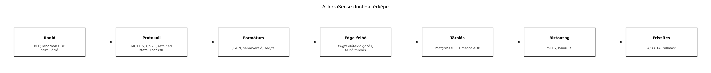

A záróprojektben a TerraSense-rendszer már együtt fut: az eszköz, a
gateway, a broker, a backend, a TimescaleDB, a Grafana és a labor-PKI
mind a ~/iot-labor/stack/compose.yaml környezetből
reprodukálható. A mérnök számára a legnagyobb kockázat ekkor már nem
egy-egy API vagy protokoll ismerete, hanem az, hogy a sok laborban
meghozott döntésből melyik miért született, és egy új telephelyen, egy
megváltozott követelmény vagy egy biztonsági észrevétel esetén hogyan
kell újra dönteni. Az Záróprojekt: a teljes
TerraSense rendszer összeállítása és átvétele alfejezet után ez az
összefoglaló éppen azt a célt szolgálja, hogy a konkrét
TerraSense-döntéseket újrahasznosítható tervezési tudássá alakítsa.
Definíció. A döntési térkép olyan dokumentált navigációs eszköz, amely egy IoT-rendszer fő architekturális kérdéseit döntési pontokra bontja, mindegyik ponthoz hozzárendeli az értékelhető opciókat, a döntést befolyásoló kritériumokat és az adott projektben választott megoldást. A döntési térkép nem egyszeri recept, hanem újrafelhasználható gondolkodási váz, amelyet egy új telephely, új szenzortípus vagy új üzemeltetési modell esetén újra kell járni.
Az alábbi folyamatábra a TerraSense fő döntési pontjait és a könyvben meghozott választásokat mutatja.

A lépések sorrendje nem merev, de kifejezi a legfontosabb összefüggéseket: a rádió erősen befolyásolja a használható protokollokat, a protokoll a kézbesítési garanciákat, a formátum a sémaverziózást, a biztonsági modell pedig az OTA és a flottakezelés kialakítását.
A döntési térkép fő sorait az alábbi táblázat foglalja össze.
| Döntési pont | Fő opciók | TerraSense-választás | Döntő szempont |
|---|---|---|---|
| Rádió | BLE, LoRaWAN, Thread/IP, Wi-Fi, mobil | BLE; laborban UDP | hatótáv, energia, adatsebesség, gateway jelenléte |
| Protokoll | MQTT, CoAP, LwM2M, Modbus/OPC UA | MQTT 5, QoS 1 | pub/sub broker, QoS, retained, Last Will, integráció |
| Formátum | JSON, CBOR, Protocol Buffers, SenML | JSON, sémaverzió | olvashatóság, tooling, eszközkorlátok |
| Edge/felhő munkamegosztás | eszköz, gateway, felhő | gateway szűrés, felhő tárolás | késleltetés, offline működés, sávszélesség |
| Tárolás | relációs, idősoros, stream | PostgreSQL + TimescaleDB | idősorlekérdezések, megőrzés, SQL |
| Biztonság | TLS/mTLS, DTLS, secure boot | mTLS MQTT, labor-PKI | eszközméret, PKI üzemeltetés, fenyegetésmodell |
| Frissítés | delta, A/B, fokozatos kiadás | A/B OTA rollback | megbízhatóság, flash méret, visszagördülés |
Az IoT-döntések ritkán hozhatók meg egymástól függetlenül. A rádió kijelöli a megengedhető energia- és adatkeretet, ezáltal szűkíti a protokollválasztékot; a protokoll meghatározza a lehetséges kézbesítési szemantikát; a formátum és a sémaverziózás a későbbi evolúció költségét; az edge/felhő munkamegosztás pedig a rendszer offline tűrőképességét. A biztonsági modell nem utólagos réteg, hanem a provisioning, a kommunikáció és az OTA közös alapja.
A TerraSense döntéseinek indoklása:
native_sim nem modellez valós rádiót.seq/ts/node_id mezők és az
explicit sémaverzió teszik evolválhatóvá a telemetriát.A döntési térkép használata során minden döntési pontnál fel kell tenni a következő kérdést: mi változott a TerraSense-hez képest? Ha például egy új telephelyen nincs helyi gateway, a BLE helyett LoRaWAN vagy mobil IP lehet szükséges; ha az energia évtizedes elemélettartamot követel, a protokoll- és formátumválasztás a CoAP/CBOR irányába tolódhat el. A térkép célja tehát nem az, hogy a TerraSense-választást erőltesse, hanem hogy a kompromisszumokat láthatóvá tegye.
A döntési térkép a mit válasszunk, az ellenőrzőlista a teljes-e a megvalósítás kérdésére válaszol. A lista a könyv korábbi „Továbbvitt eredmény” jelölésű döntéseire épül, ezért a záróprojekt átvétele előtt minden sorhoz bizonyítékot kell rendelni.
Azonosítás és idő. Minden telemetriaüzenet
tartalmazza a node_id, seq és ts
mezőt; a ts UTC, epoch ms. A topic a
terrasense/<site>/<node>/telemetry konvenciót
követi. Ellenőrzés: a Adatformátumok: JSON, CBOR,
Protocol Buffers, SenML és az Idő az IoT-ban:
időbélyeg, időszinkron, sorrend alfejezetek szerint.
Protokollgaranciák. A nem veszíthető adatok MQTT QoS 1 vagy QoS 2 szinten közlekednek; a munkamenet-állapot, a retained telemetria és a Last Will konfigurálva van. Ellenőrzés: MQTT QoS, munkamenetek, retain, Last Will és MQTT 5.
Formátum és séma. Az üzenet explicit sémaverziót hordoz; a fogyasztó a régebbi sémaüzeneteket is értelmezi, vagy a verzió alapján elutasítja. Ellenőrzés: Sémák és verziózás: kompatibilis változtatások.
Idempotens ingest. A backend ugyanazt az üzenetet
at-least-once kézbesítés mellett sem tárolja kétszer; a deduplikáció a
node_id és seq páron, vagy az ebből képzett
hash-en alapul. Ellenőrzés: Ingest: MQTT-ből a
backendbe, idempotensen.
Store-and-forward. A ts-gw offline időszakban puffereli a telemetriát, majd visszatölt; a puffer felső korlátja és a korlát túllépésének kezelése dokumentált. Ellenőrzés: Store-and-forward: offline működés és visszatöltés.
Biztonság. Nincs nyílt, hitelesítés nélküli brokerport; a kapcsolat mTLS-t használ; az eszköz rendelkezik egyedi identitással; nincs gyártói alapértelmezett jelszó. Ellenőrzés: Eszközidentitás: X.509-tanúsítványok, PKI és kulcstárolás és Biztonságos kapcsolat: TLS 1.3, mTLS és DTLS az MQTT/CoAP alatt.
Frissítés. A firmware A/B vagy azzal egyenértékű frissítést és rollbacket támogat; a kép aláírt; a fokozatos kiadás lehetősége adott. Ellenőrzés: OTA-frissítés: A/B képek, rollback, delta, fokozatos kiadás.
Megfigyelhetőség. A naplók UTC-ben készülnek; a metrikák elérik az üzemeltetőt; az eszközök állapota és a Last Will üzenetek a dashboardon láthatók. Ellenőrzés: Megfigyelhetőség végponttól végpontig: metrikák, naplók, nyomkövetés.
Reprodukálhatóság. A teljes TerraSense a
~/iot-labor/stack/compose.yaml és a záróprojekt
laborfájljaiból újraépíthető; az átvételi tesztek futnak, és nem
szorulnak manuális varázsváltozókra. Ellenőrzés: Záróprojekt: a teljes TerraSense rendszer összeállítása
és átvétele.
A lista nem a laborok könyvelése, hanem kockázatcsökkentő eszköz: ha egy sorra nincs bizonyíték, a hiányzó komponenst még a záróprojekt lezárása előtt vissza kell vezetni a megfelelő alfejezetbe.
Az ellenőrzőlista használata akkor hatékony, ha minden sorhoz konkrét futási bizonyítékot rendelünk: az azonosítás és idő sor a Grafana-dashboardról kinyert JSON-üzenet, a protokollgaranciák a Mosquitto logja, az idempotencia a backend-teszt adatbázisállapota, a frissítés az A/B rollback teszt. Ha az átvételi tesztek egy részlete „zöld”, az még nem jelenti azt, hogy a lista teljes: a záróprojektben gyakran a pozitív főút van tesztelve, a hiba- és offline utak nincsenek.
Tipikus ellenőrzési tünetek:
| Tünet | Valószínű ok | Javítás |
|---|---|---|
| A Grafana-diagram hőmérsékletgörbéje kettőződik | QoS 1 újbóli kézbesítés, nincs deduplikáció | idempotens ingest node_id+seq alapon |
| Az eszköz telemetriája a brokeren megjelenik, de a backend nem látja | topic-névtérés, rossz site/node tag | topic-konvenció ellenőrzése |
| Az offline gateway visszatöltése régi időbélyegeket ír | az eszköz órája helyi időben járt, vagy a gateway a feldolgozás idejét írta | ts használata UTC epoch ms-ként |
| A MOSQUITTO külső hálózatról elérhető, nincs TLS | alapértelmezett konfiguráció maradt nyitva | csak mTLS-listener, labor-CA |
A hibakeresés során mindig az adatút mentén haladjunk: eszköz → gateway → broker → ingest → tároló → dashboard. Ezzel a sorrenddel a hiba gyorsan beszűkíthető egy rétegre.
Helyi idő UTC helyett. A szenzorcsomóponton gyakran
a rendszeróra vagy a fejlesztői laptop ideje kerül a ts
mezőbe. Több telephely vagy átállítás esetén a grafikonok félrevezetőek
lesznek. A helyes megoldás: minden eseményidőt UTC, epoch ms formátumban
rögzíteni, és csak a megjelenítésnél váltani zónaidőre. A Idő az IoT-ban: időbélyeg, időszinkron, sorrend
alfejezetben tárgyalt szabályok itt is kötelezőek.
QoS 1 idempotencia nélkül. Az MQTT QoS 1 garantálja
a legalább egyszeri kézbesítést, de nem garantálja a pontosan egyszeri
tárolást. Ha a backend minden PUBLISH-t feltétel nélkül beszúr, a
hálózati nyugtázás elvesztéséből vagy a gateway store-and-forward
visszatöltéséből duplikátumok keletkeznek. Az idempotens ingest és a
seq alapú deduplikáció nem kényelmi funkció, hanem az
elemzés helyességének feltétele.
A frissíthetőség hiánya. Egy IoT-rendszer akkor is sebezhető marad, ha ma minden teszt zöld, de a firmware vagy a gateway-szoftver nem frissíthető hibajavításra egy későbbi CVE után. Az A/B OTA, a rollback és a fokozatos kiadás a OTA-frissítés alfejezet szerint már a kezdeti architektúra része, nem utólagos mentőakció.
Alapértelmezett jelszavak. A fejlesztői kényelemből nyitva hagyott névtelen MQTT-hozzáférés vagy gyári jelszó a legkönnyebb támadási felület. A TerraSense laborban ezért a belső broker is csak mTLS-listenerrel fut, és a labor-CA egyértelműen laborcélú. A Tipikus IoT-sebezhetőségek és a szabályozás alfejezetben bemutatott esetek jól mutatják, hogy a tömeges fertőzések ritkán igényelnek kifinomult kriptográfiai támadást.
Az alábbi feladatok önellenőrző kérdéssorként is szolgálnak.
gh2 telephelyen nincs BLE-gateway, csak egy LoRaWAN-átjáró
érhető el. Melyik TerraSense-döntési pontok változnak, és mely
ellenőrzőlista-sorok maradnak érvényben?~/iot-labor/i066/ átvételi tesztjeihez adjon hozzá egy új
esetet, amely ugyanazt az MQTT-telemetriaüzenetet kétszer küldi be.
Milyen adatbázis-kulcsot és milyen asszertet kell használni az
idempotens ingest igazolásához?node_id és
seq megegyező értékkel kétszer publikálja. Az asszert azt
ellenőrzi, hogy a telemetria-táblában pontosan egy sor jelenik meg, és
az ingest naplója a második esetben deduplikációt jelez. A mögöttes
egyedi kulcs a node_id és seq páron, vagy az
ebből képzett hash-en alapul.ts mező nem az
eseményidőt, hanem a feldolgozási időt hordozta, az idősor időeltolódást
is mutathat.A döntési térkép hét fő pont köré rendezi a TerraSense-t: rádió (BLE, laborban UDP), protokoll (MQTT 5, QoS 1), formátum (JSON, sémaverzió), edge/felhő munkamegosztás (ts-gw előfeldolgozás, felhő tárolás), tárolás (TimescaleDB), biztonság (mTLS, labor-PKI) és frissítés (A/B OTA rollback). A tervezési ellenőrzőlista a korábbi „Továbbvitt eredményekre” épül: azonosítás és UTC-idő, protokollgaranciák, sémaverzió, idempotens ingest, store-and-forward, mTLS, A/B rollback, megfigyelhetőség és reprodukálhatóság. A leggyakoribb hibák: helyi idő UTC helyett, QoS 1 idempotencia nélkül, frissíthetőség hiánya és alapértelmezett jelszavak. Az önellenőrző kérdéssor azt igazolja, hogy az olvasó nemcsak a TerraSense-laborokat tudja lefuttatni, hanem a döntéseket új követelményekhez is hozzá tudja igazítani.
Ez az alfejezet nem vezet be új külső forrást vagy API-t. A döntési
térkép és az ellenőrzőlista a könyv korábbi alfejezeteinek
laboreredményeit és döntéseit összegzi; a szoftververziók a
~/iot-labor/stack/compose.yaml aktuális állapotából
olvashatók ki. Az iparági statisztikákat és szabályozási határidőket itt
nem ismételjük meg; azok a Tipikus
IoT-sebezhetőségek és a szabályozás, a Biztonságos kapcsolat: TLS 1.3, mTLS és DTLS az
MQTT/CoAP alatt és az OTA-frissítés: A/B képek,
rollback, delta, fokozatos kiadás alfejezetekben jelölt ellenőrzési
igények szerint kezelendők.